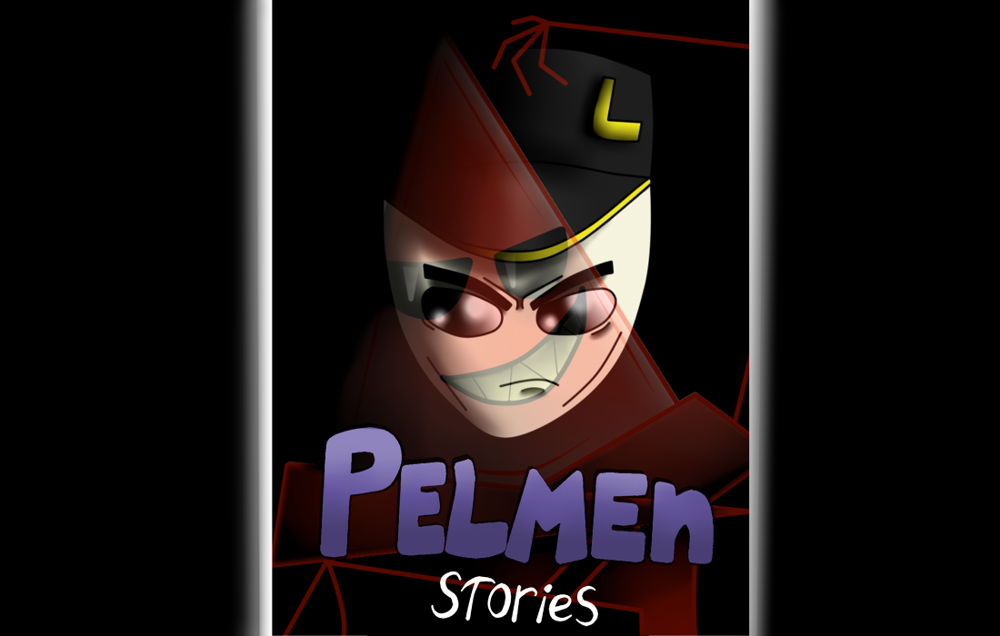

Pelmen Stories Season 2
by
CRedMoon Team
Posted on May 29, 2023 at 12:00 PM
Про
История рассказывает о продолжении основных сюжетных действий спустя 15 лет, а конкретнее о небольшой группе, которая выполняет задания ради общего блага населения и устранения опасных лиц, что является заменой больших групп людей из первого сезона.
Перессказ первой главы
Наши главные герои - Лоуренс, Роад-роллер (Персонаж из первой части) и Оникс. Их главными противниками выступают расса треугоьников из другого мира и их король.
С самого начала нам показывают мир треугольников. Летающая машина приближается к большому замку. К ней подходит охранник Сильвер, полностью отдетый в железные доспехи. Из машины выходит другой треугольник, Дос, Они открывают ворота сзади машины и оттуда выходит высокий красный треугольник - Лорд Мортис (На обложке), который был заточён в тюрьме 150 лет из-за своего безумия, они проводят его в замок.
После этого нам показывают обычный мир. Под покровом ночи на окне своего дома сидит Лоуренс (Тоже на обложке) и пьёт чай. После этого он ложится на кровать с ноутбуком и читает сообщение от его босса. Утром он завтракает и идёт на встречу со своими коллегами по работе. Он встречает их у кафе за столиком и начинает разговор. Роад-роллер спрашивает насчёт задания, после чего Лоуренс приглашает пройти к боссу, так как задание очень секретно. Прийдя в основное здание они видят босса - сидящий на троне, окутанный тенями в длинном пальто с высоким воротником, который полностью закрывает его голову сзади, который таинственным голосом рассказывет о том, что лорда Мортиса отпустили на волю, что очень опасно, и им нужно найти Пельменя, который поможет им найти путь в мир треугольников.
На этом глава заканчиввается.

О блогере
Кроль Милан
Разработчик инди-игр, а также создатель комиксов серии "PELMEN Stories"